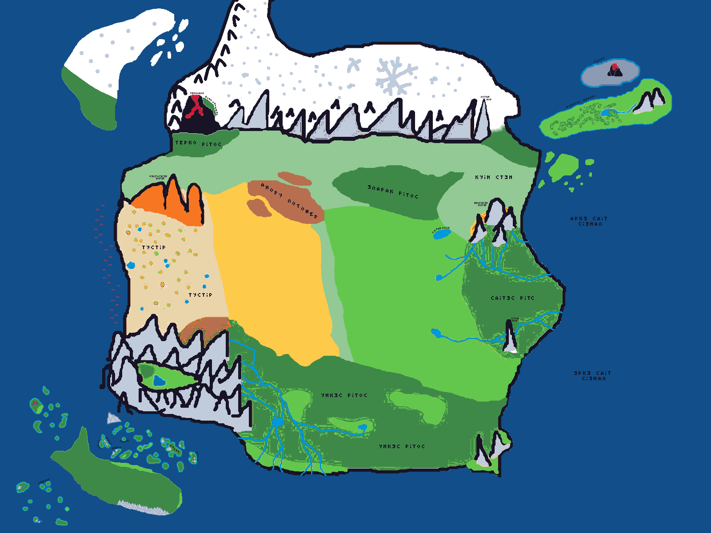
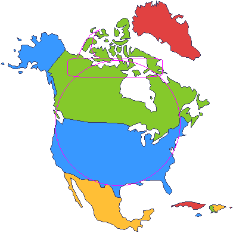

Карта Эспэрса
Решил попробовать сделать в Paint'е, для начала. Потом может будет что-то более интересное. Со временем конечно улучшу эту версию. Но много не ждите. А пока вот держите предварительный вариант:
{kind=link}
Центр
В центре это поля и равнины. Они поделены на холмы на востоке и саванну на западе.
Северо-северо-западе располагаются болота Анору Лотомэр (Мрачные Болота) на северо-северо-востоке есть небольшой лес Эларак Ритос (Холодный Лес).
На востоке есть горячие источники.
Север
На севере располагается горная цепь или даже вытянутое горное плато - Лота́н Но́рэр (Серые Горы).
Севернее от них располагается очень холодный край, Лонос Марс (Белая Земля) где температура всегда отрицательная. Тем не менее это достаточно живая земля. Вблизи гор встречаются редкие леса, животные, птицы. Дальше на север холмистая местность становится степной а затем и вовсе пустынной. От Лонос Марс, на западной их части отходит длинный полуостров, который идёт дальше на север и в оконечности заворачивает на восток. На западном побережье полуострова стоят холмы и низкие горы. С севера часто дуют сильные, холодные ветра, однако они останавливаются перед Лотан Норэр, что обуславливает резкий перепад температур за горами и перед ними.
На востоке от гор есть небольшой перешеек земли, между самой восточной горой Латан Нор (Ледяная Гора) и водой. Там растет маленький лес.
Южнее от вулкана находится маленький Тэркос Ритос (Тёмный лес).
На севере от вулкана есть так называемый Ноэр Латэмар (Северный Оазис). Крупная территория, которая, несмотря на то, что располагается за Лотанэсэр Норэр, теплая и зелёная. На ней произрастают множество мхов, лишайников, папоротников, и также некоторые деревья, наблюдаются небольшие геотермальные источники. Выше по склону Тэрконор также есть частые озера, которые чем выше тем большее содержание серы в них есть. На территории оазиса проживают множество мелких и крупных видов млекопитающих, некоторые виды крупных, хищных птиц, мелкие птицы.
На западе гор есть большой, широкий, черный вулкан - Тэрко́нор (Тёмная Гора). Его окружают относительно небольшие горы.
Восток
Восточней от центральных равнин. Находится Саи́тэс Рито́с (Восточный Лес). Он слегка холмистый, и изрезан реками.
Северней, разделяя лес и степь находятся Энор Норэр (Малые Горы). С них также стекают обильные реки. За ними располагается широкий, каменистый каньон Эмирэс Марс (Глубокая Земля). Далее, ещё северней простирается Куин Стэн (Тихая Степь). Западнее от них находится крупное озеро Латан Лосирт (Ледяное Озеро).
На востоке есть фьорд. Восточная линия берега омывается двумя морями Аркэ Саит Сиэнал и Эркэ Саит Сиэнал (Врехним и Нижним Восточными Морями соответственно).
На юге, от леса, стоит Истом Нор (Гора Мудрости), этаки немного скала.
Чуть западней, до леса на равнине, располагаются горячие источники. С них стекают реки, которые пронизывают лес, и впадают в другие реки.
Юг
Южнее равнин, есть огромный У́нкэс Ритос (Южный Лес). Также как на картинке между ним и Саитэс Ритос есть значительные равнины. Там холмы. И он также простирается почти ровной линией, с лёгким загибом на север. В самом лесу есть несколько полей.
На востоке есть пара небольших гор, стоящие на равнинах. Южнее от них есть небольшая равнина.
На северо-западе есть небольшие Арса Лотомэр (Сухие Болота).
На западе от Ункэс Ритос есть горное плато - Унилрил Норэр (Кольцевые Горы), в виде кольца, или скорее сплюснутого овала. Горы, с южной и западной стороны, стоят прямо в воде, переходя в скалы. С северной и восточной стороны на километры простирается Амир Туокарс (Высокая Долина). Внутри, "кольца" гор, есть небольшая поляна, с озером и рощей леса, ближе к западу. Прямого прохода к поляне нет, и она расположена высоко над уровнем моря. С них стекают реки, и они простираются далеко на восток, до половины леса, и на юг, в море. Кое-где образуется озёра, как те что заканчивают реку, так и те, из которых вытекают реки. На северо-востоке есть три склона на которых растёт много стираксов.
Запад
Западней от равнин располагается Тустир (Пустыня). Внутри есть много оазисов. Большие дюны.
Северней, находятся Рэлто Норэр (Рыжие Горы), они правда рыжие. Их не много, 4-5 гор, с ровными вершинами и крутыми склонами. На западе, есть небольшой перешеек земли между пустыней и равнинами. Позади гор также пустыня немногим продолжается.
Острова
На юго-западе есть большой остров - Кит (Кит). Он покрыт лесом. На севере от него есть множество скал и маленьких, голых островков, до континента.
Северо-западней также есть небольшое количество рифовых островков, вулканического происхождения. Ну, 12 островков и скал будет достаточно.
Ну и юго-западней, поодаль от острова, есть несколько скал. И несколько, 5-7, средних островов. Голые, но два достаточно велики для травы.
Северо-восточней есть небольшой остров - Нинэсэс Мэлани (Новая Надежда). Северней от него - Расар (Пепел). Нинэсэс Мэлани в основном ровный остров, с редким лесом. Ближе к востоку появляются пологие холмы, которые заканчиваются двумя горами. От гор течет одна река и заканчивается небольшим озером в центре леса. Расар маленький, безжизненный вулканический остров.
Немного западней от северной части Тустир, чуть ниже Рэлто Норэр, в море, находятся группа островов, из называют - Син Ислэрурэр (Зелёные острова). Густая группа островов, средних размеров, тропического климата, количество - 9. Самый большой, находится северо-западней от центра группы, называется - Норасэс Олиуин, на нем находится потухший вулкан. На них, много изумрудов и оливина.
Ещё дальше на запад, чуть южнее, приблизительно по центру Тустир, находится ещё один небольшой остров, раза в два больше Норасэс Олиуина. Овальной формы, вытянут по горизонтали. Он в основном покрыт травой и редкими деревьями, пальмами.
И ещё дальше на запад, и более южнее, приблизительно рядом с южной частью Тустир, находится последний остров, таких же размеров как и предыдущий и такой же местности. Имеет округлую форму и бухту на северо-востоке, в целом, как надкусанное яблоко.
Приблизительные размеры.
